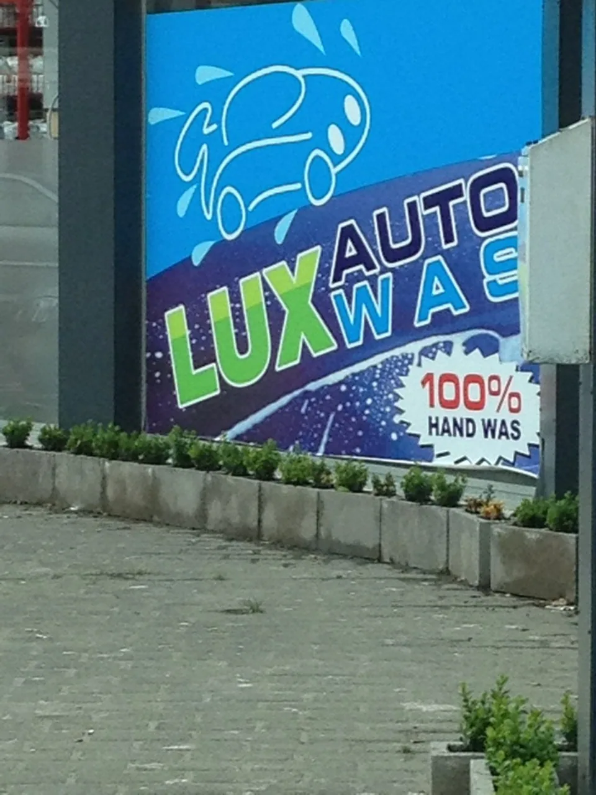
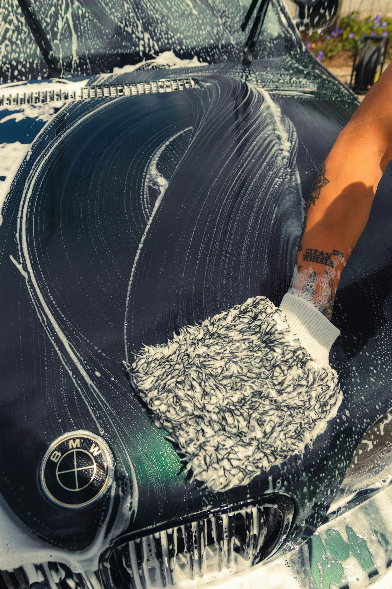
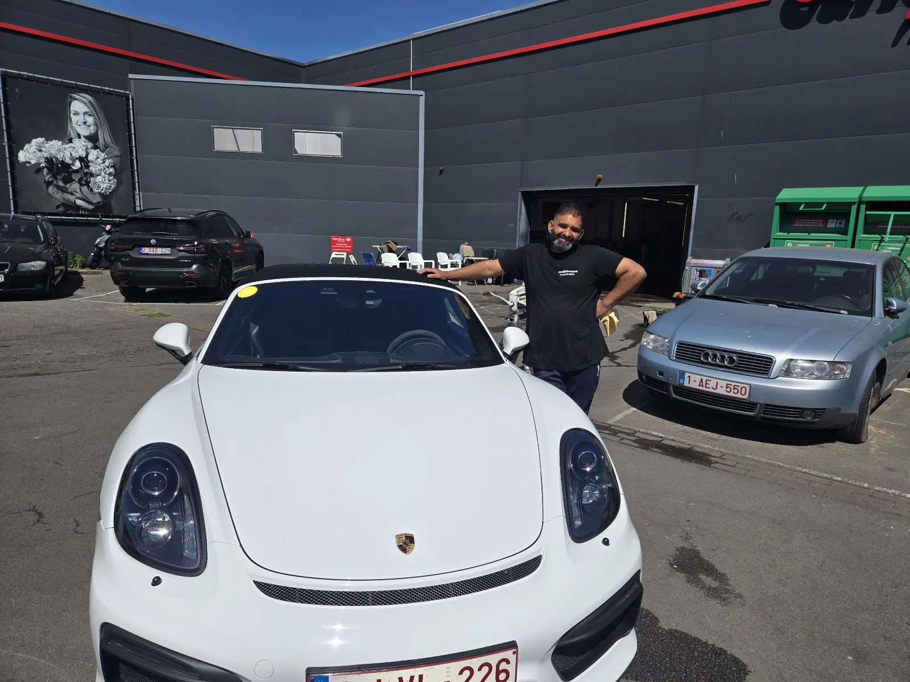
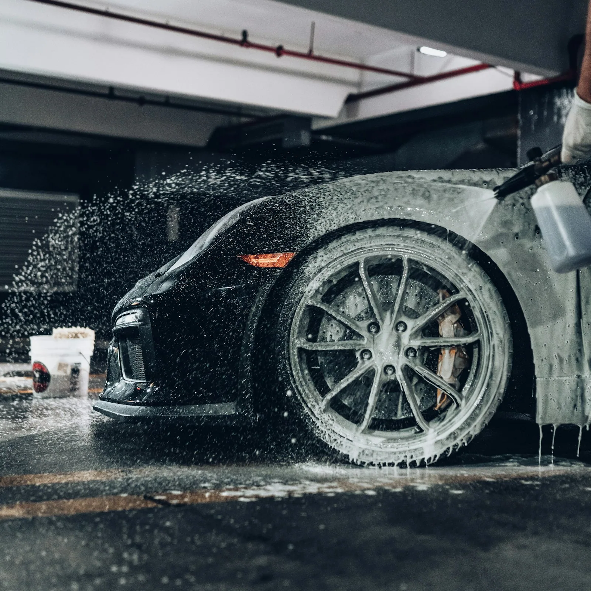
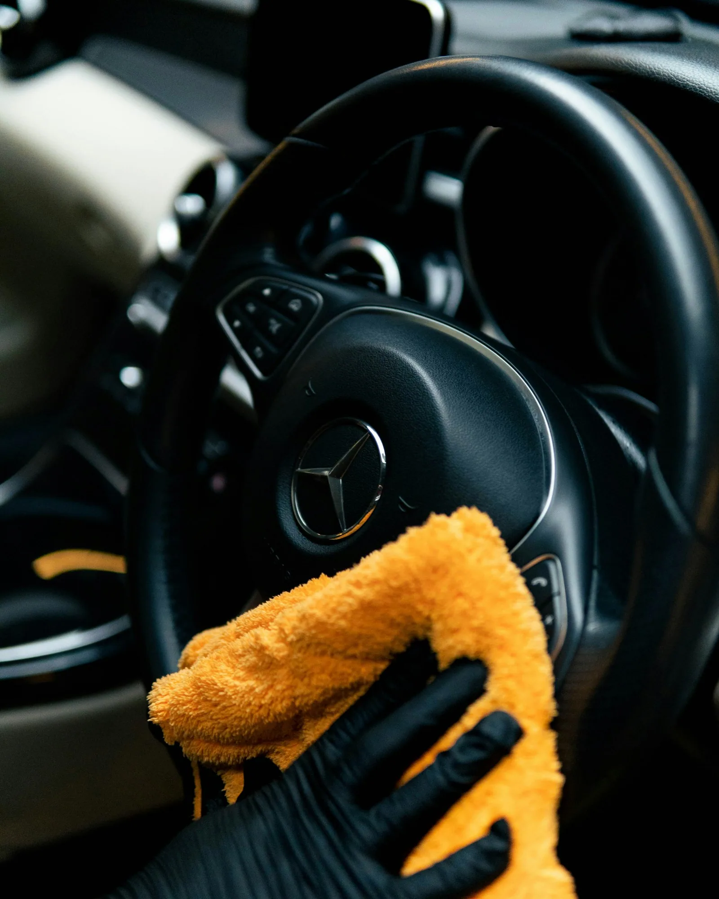
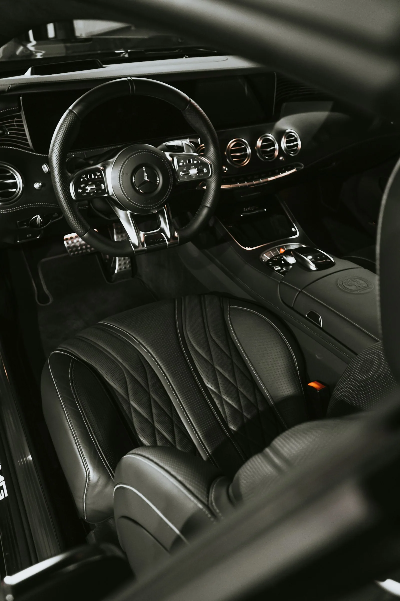
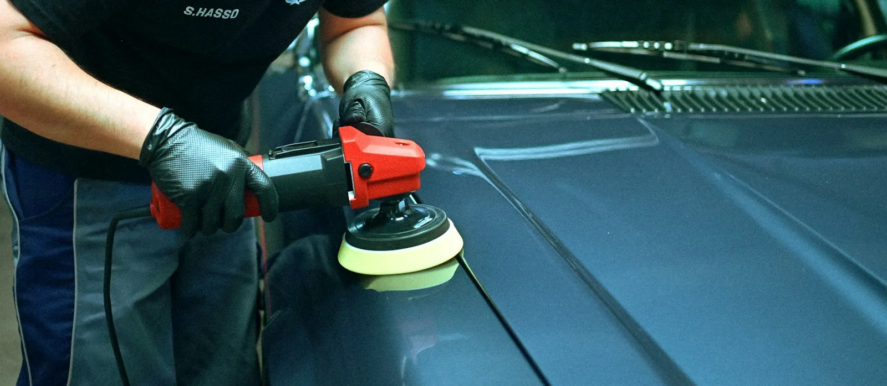
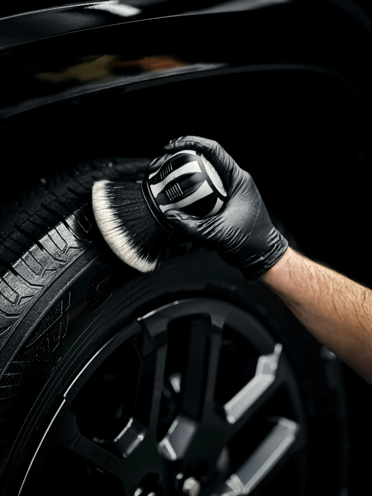
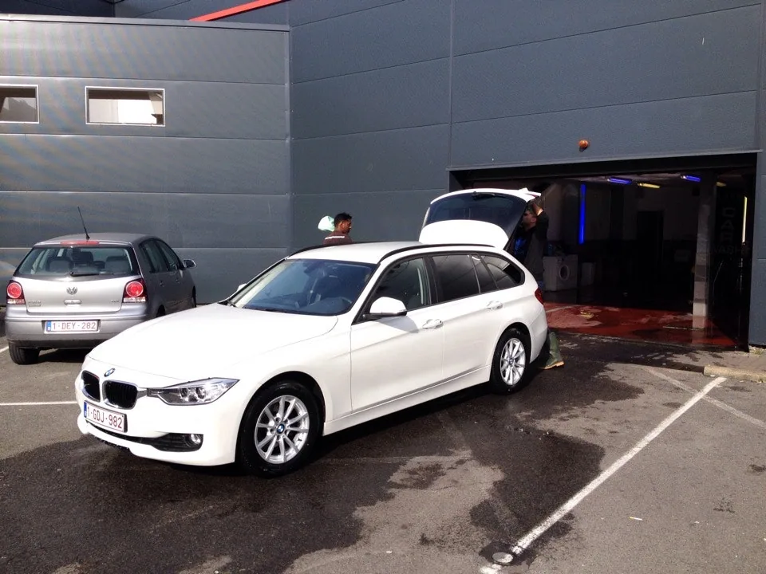
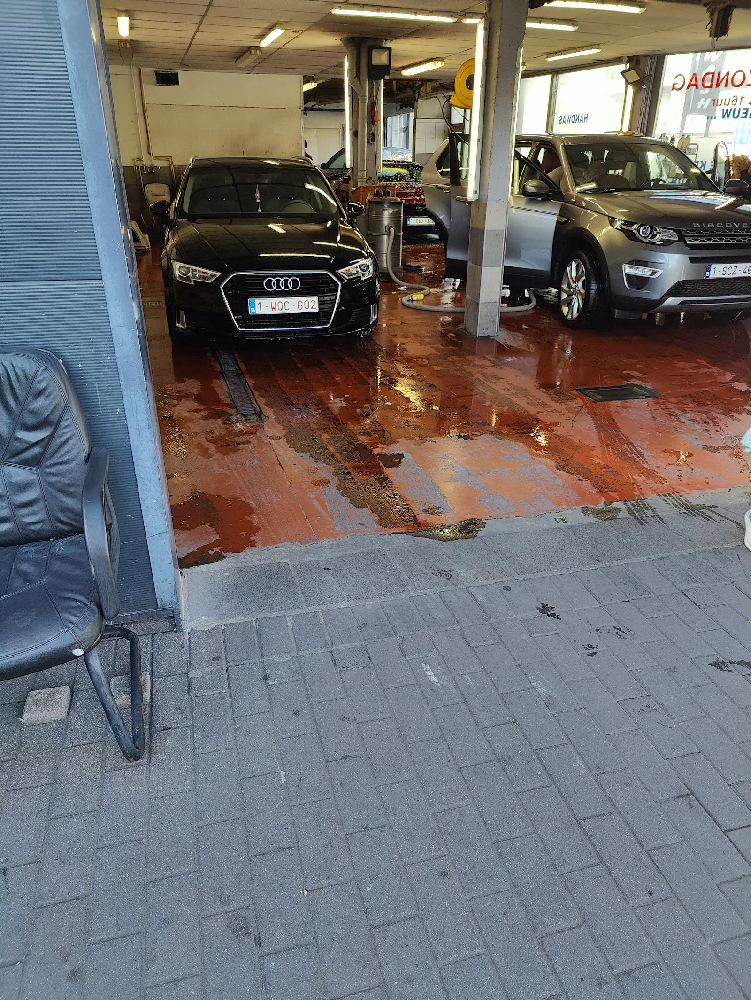

Je rijdt binnen
Volg het blauwe bord aan de Torhoutsesteenweg. Zeg ons wat je wil, dan zetten we je wagen meteen klaar.
Geen borstels en geen haast. Bij Lux gaat je wagen binnen en buiten door handen die dit al twintig jaar doen. Je ziet zelf wat er gebeurt, en je rijdt blinkend weer weg.


Kies wat je wagen nodig heeft. Twijfel je, dan kijken we samen even rond je auto voor we beginnen.

Voorwassen, inschuimen en met de hand afwassen. Daarna met zachte doeken droog, zodat er geen strepen blijven staan.
Bekijk de prijs
Stofzuigen tot onder de zetels, matten uitkloppen, dashboard en deurpanelen proper. Ook de kleine vakjes en de bekerhouders.
Bekijk de prijs
Met stoom gaan we dieper in zetels, naden en tapijten. Ideaal na de winter, met kinderen of als de hond vaak meerijdt.
Bekijk de prijs
Fijne krasjes en een doffe lak worden weer diep en glanzend. Een laag wax beschermt de lak daarna tegen zout en vuil.
Vraag het aan de kassa
Remstof en vuil tussen de spaken, met een aparte borstel per velg. Blinkende velgen maken het verschil.
Vraag het aan de kassa
De volledige beurt in één keer. Je wagen ziet er weer uit zoals de dag dat je hem ging halen.
Bekijk de prijsKies je type wagen en wat je wil laten doen. Je ziet meteen de prijs van ons prijsbord, zonder verrassingen achteraf.
1. Je wagen
2. Soort beurt
3. Wat mag er gebeuren

Volg het blauwe bord aan de Torhoutsesteenweg. Zeg ons wat je wil, dan zetten we je wagen meteen klaar.

Met een paar man tegelijk aan je wagen. Buiten, binnen of allebei, zoals je gekozen hebt.
Voor je vertrekt loop je mee rond de wagen. Is er iets dat beter kan, dan doen we het meteen opnieuw.
Gemiddelde score uit 211 reviews op Google. Elke review lezen we, ook de kritische.
Ik was mijn mand met boodschappen vergeten terug in te stoppen. De mannen waren attent genoeg om die voor mijn vertrek terug in de koffer te steken. Top carwash, erg proper, vriendelijk en een eerlijke prijs.
| Maandag | 8u tot 19u |
| Dinsdag | 8u tot 19u |
| Woensdag | 8u tot 19u |
| Donderdag | 8u tot 19u |
| Vrijdag | 8u tot 19u |
| Zaterdag | 8u tot 19u |
| Zondag | Gesloten |
Staat je vraag er niet tussen? Stuur gerust een berichtje, we antwoorden snel.
Neen, je mag gewoon binnenrijden tijdens de openingsuren. Kom je met een grote wagen of wil je een steamwash, stuur dan even een bericht, dan houden we rekening met je.
Klein zijn micro's, hatchbacks, sedans en coupés. Middel zijn CUV's en kleine familiewagens. Groot zijn SUV's, jeeps en grote familiewagens.
Bij een handwash werken we met water, schuim en zachte doeken. Bij een steamwash gebruiken we stoom, die dieper gaat in stof, naden en tapijten. Handig als je interieur wat meer liefde nodig heeft.
Dat hangt af van je wagen en wat je kiest. Een buitenwas is snel klaar, een combi met steamwash vraagt meer tijd. Aan de kassa zeggen we je meteen hoe lang het duurt.
Zeker. Kom even langs of stuur een foto van je wagen via WhatsApp, dan zeggen we je wat we kunnen doen en wat het kost.
DIEen woordje uitleg van Stijn
Ik maakte deze demo voor jullie om te tonen wat er kan. Na een kort gesprek maak ik er iets veel persoonlijkers van, helemaal naar jullie wens.
Vrijblijvend. Ik kom langs of we bellen.
Op maat, op jullie eigen domein.
Geen voorschot. Jullie betalen pas als alles klaar is.
Hosting, domeinnaam en kleine wijzigingen, zoals nieuwe openingsuren.
Omdat een voorbeeld meer zegt dan een mail. Zo zien jullie meteen wat er kan, en het kost jullie niets.
Nee. Het gesprek is vrijblijvend. Vinden jullie het niks, dan is het daarmee gedaan.
Na ons gesprek staat jullie site binnen 10 tot 14 dagen online.
Zeker. Jullie domeinnaam kan gewoon blijven, de nieuwe site komt in de plaats van de oude.
Nee, dat doe ik op basis van ons gesprek. Eigen foto's zijn mooi meegenomen, maar niet nodig om te starten.